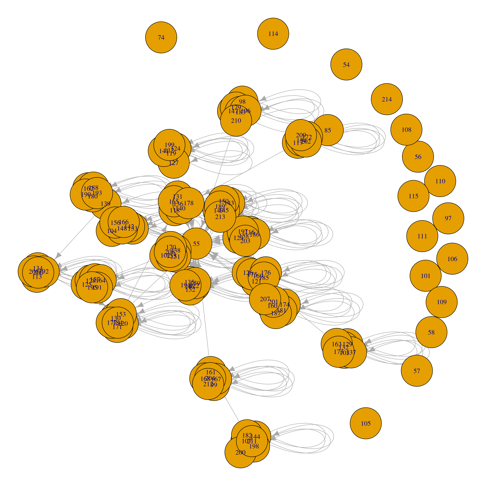
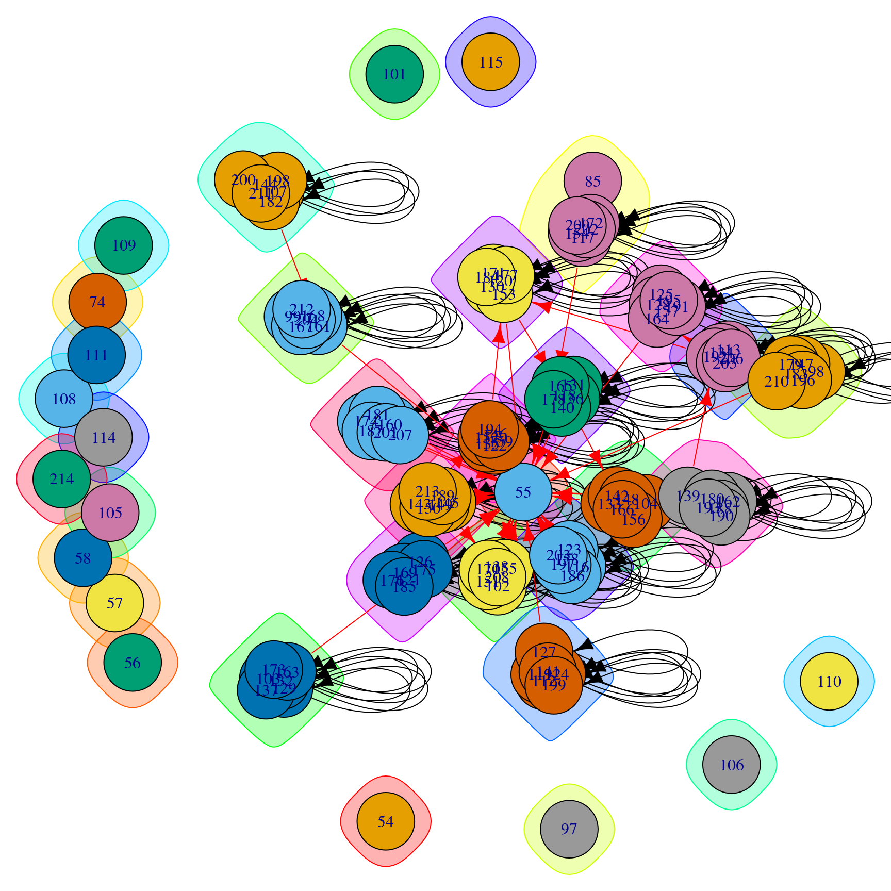
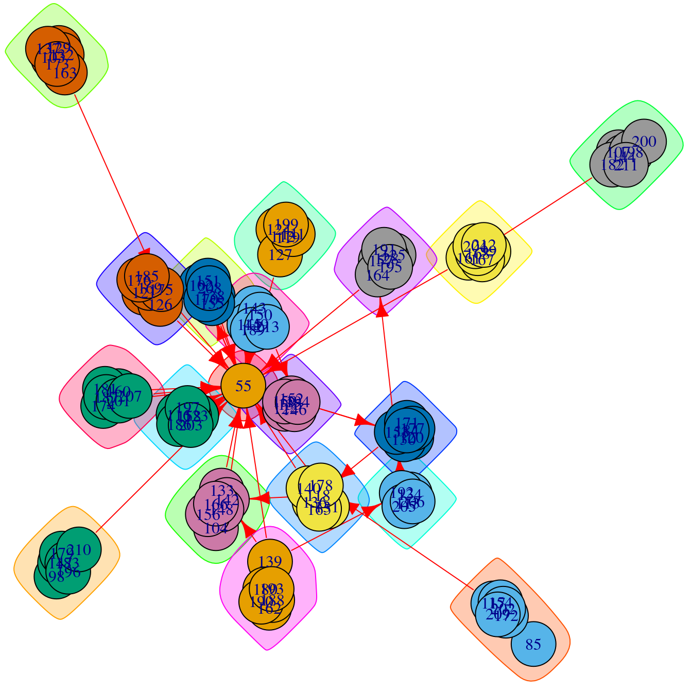
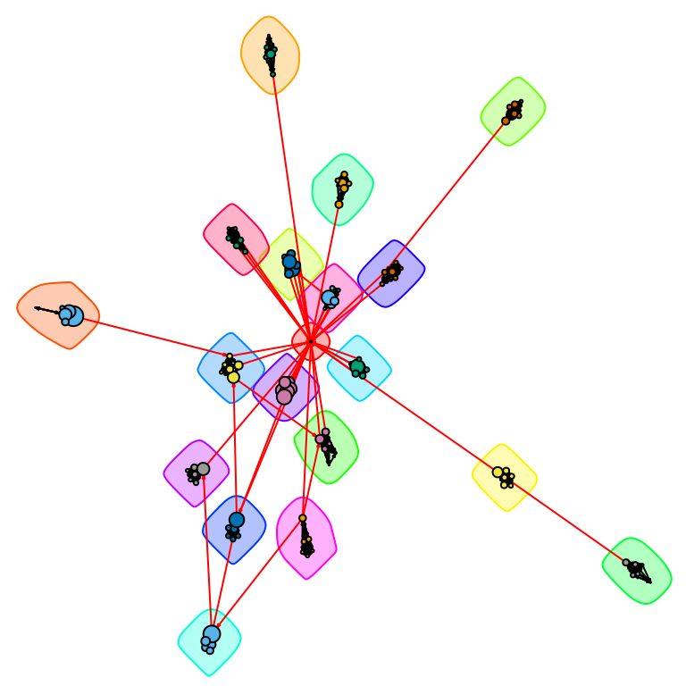
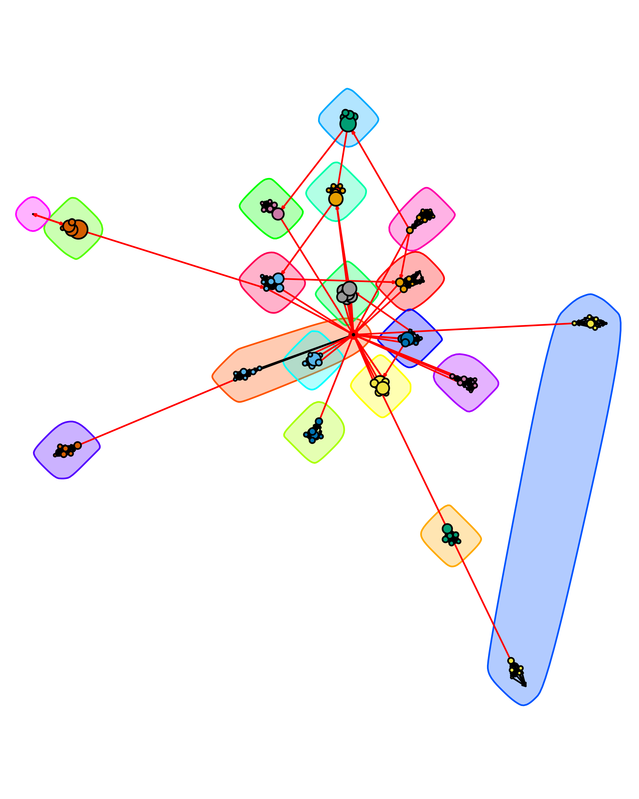
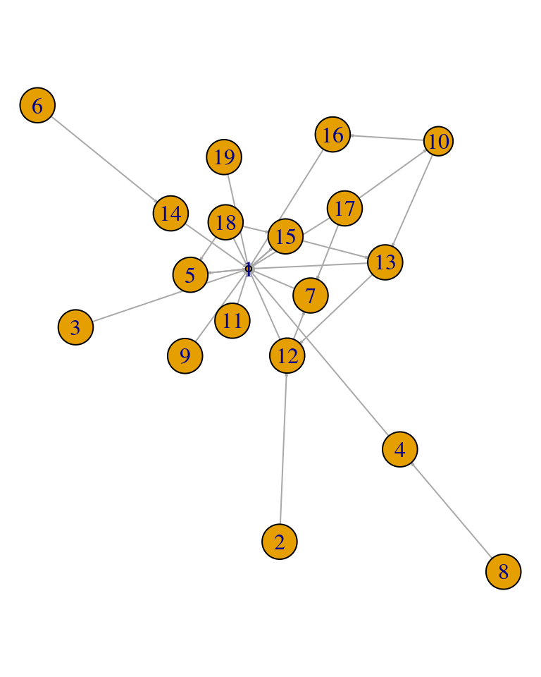

library(igraph)
library(rio)16 Community Detection in Learning Networks Using R
Abstract
In the field of social network analysis, the quest for understanding interactions and group structures takes a center stage. This chapter focuses on finding such groups, constellations or ensembles of actors who can be grouped together, a process often referred to as community detection, particularly in the context of educational research. Community detection aims to uncover tightly knit subgroups of nodes who share strong connectivity within a network or have connectivity patterns that demarcates them from the others. This chapter explores various algorithms and techniques that unveil these groups or cohesive clusters. Using well-known R packages, the chapter primarily delves into the core approach of identifying and visualizing densely connected subgroups, offering practical insights into its application within educational contexts. Ultimately, the chapter aims to serve as a guide to unraveling learning communities, providing educators and researchers with valuable tools to discern and harness the power of interconnectedness in learning networks.
3 Algorithms for community detection
Community detection in social network analysis involves the application of specific algorithms (the number of community detection algorithms is rather high and will not be addressed in this chapter; for further information on the nature and performance of community detection algorithms, we suggest reading Lancichinetti and Fortunato [35], Fortunato [36], Fortunato and Hric [9] and Chunaev [37]), the most popular being Louvain [38], the one implemented in the software applications Gephi, Pajek and visone by default, and Girvan-Newman’s edge betweenness [39] and clique percolation [40], used in CFinder.
In this chapter, we will focus on how to perform community detection with the R programming language. In R, community detection algorithms are implemented as functions of the igraph library [41], which was already introduced in the Social Network Analysis chapter [10]. The library includes functions to apply the following methods:
Louvain (
cluster_louvain): A multi-level modularity optimization algorithm that aims to discover community structure [42].Girvan-Newman (
cluster_edge_betweenness): The concept behind this method is that edges connecting distinct communities tend to have a high edge betweenness and all the shortest paths from one community to another must pass through these edges [43].Fast greedy optimization (
cluster_fast_greedy): A fast greedy modularity optimization method to identify communities within a network [19].Fluid communities (
cluster_fluid_communities): This method is based on the concept of multiple fluids interacting in a non-uniform environment (represented by the graph topology). The method identifies communities by observing their expansion and contraction patterns, driven by their interactions and density [44].Random walk-based:
Infomap (
cluster_infomap): This method discovers the community structure that minimizes the expected description length of a random walker's trajectory [45].Walktrap (
cluster_walktrap): This method is based on the underlying concept is that short random walks have a tendency to remain within the same community [46].Label propagation (
cluster_label_propagation): This method for detecting community structure in networks is efficient, with a nearly linear time complexity [47]. It operates by assigning unique labels to the vertices and subsequently updating these labels through majority voting within the vertex's neighborhood.Leading eigenvector (
cluster_leading_eigen): This method identifies densely connected subgraphs within a graph by computing the principal non-negative eigenvector of the modularity matrix associated with the graph [48].Leiden (
cluster_leiden): The Leiden algorithm is similar to the Louvain algorithm but offers superior speed and delivers higher-quality solutions. It has the capability to optimize both modularity and the Constant Potts Model, which overcomes the resolution limit challenge [49].Optimal modularity clustering (
cluster_optimal): This method computes the optimal community structure of a graph by maximizing the modularity measure across all potential partitions [18].Simulated annealing (
cluster_spinglass): This method leverages the spin-glass model and simulated annealing techniques to explore the graph's structure and identify cohesive communities [50].
Other available libraries to perform community detection include nett, which allows for spectral clustering (function spec_clust()) and implements methods for hypothesis testing.
When to choose one algorithm over another usually depends on the characteristics of the network data, whether or not directed edges are allowed and the goals of the analysis. For example, if the network is very large, Louvain or Label Propagation algorithms may offer satisfactory results with a small computational effort, whereas Girvan-Newman might be more appropriate if the network has a hierarchical structure or when networks are large. If the network has a flow of information, Infomap may be better suited, and spectral clustering might be preferrable when community structures are complex. Guidance about which algorithms to use is not robust, and issues such as computational efficiency are more often discussed than the match with research questions [9, 51]. Ideally, the choice should be made to align with the processes believed to drive community formation and the research purpose in seeking this structure [51]. In any case, we would recommend trying different algorithms and comparing their results before choosing one.
It is important to note the limitations of some community detection algorithms in igraph. For example, fast greedy optimization, leading eigenvector, Leiden, Louvain and simulated annealing only work with undirected graphs —even though some of these algorithms, such as Leiden, work in directed networks, their implementation in igraph does not allow for community detection in directed networks—, whereas fluid communities or simulated annealing only work with simple and connected graphs.
Finally, it is worth mentioning that a limitation of some methods is that they are non-overlapping community detection algorithms; that is, they consider that a node belongs only to one group, partition or community. However, that is not often the case, which is why some overlapping community detection algorithms have been proposed (for example, random walk-based algorithms may handle overlapping), and the reader might want to check whether the chosen algorithm finds overlapping or non-overlapping communities when choosing what algorithm to use. Fortunato and Hric [9] offer additional guidance if overlapping communities are required. Now that we have covered the igraph library along with its features and limitations, in the next section we will present an example of how to use this library.
4 Community detection in R: An annotated example using igraph
To illustrate the use of igraph to perform community detection algorithms in R, we will use data from one of the courses reported in an article by Hernández-García and Suárez-Navas [52]. More specifically, this example focuses on the data from the “Programming Basics” undergraduate course. The data set includes forum activity of 110 students from the BSc Degree on Biotechnology, which follows the Comprehensive Training Model of the Teamwork Competence (CTMTC) methodology [53]. In this course, students work in groups of between five and seven members each. The activity in the forum includes Q&As, technical and academic support in general forums, and message exchanges between group members in group-exclusive forums.
The original data set including all forum activity was divided into three different subsets, with the help of GraphFES [54]: views (how many times user a read a message posted by user b), replies (which user replies to a different user, and how many times) and messages (which message is a reply to another message).
In this example, we will focus on the Replies data set, a directed graph. The node list of the Replies data set includes a total of 124 nodes with three attributes: initPosts (number of first posts of a discussion sent by a user), replyPosts (number of posts replying to a previous post in the discussion) and totalPosts (the sum of initPosts and replyPosts). Weights in the edge list (attribute w) represent the number of times that user Target replied to user Source. The data set includes a total of 662 weighed edges. First off, we load the required libraries for data loading (rio) and analysis (igraph). Install them first if you have not done so before.
Then, we import the node and edges data, and we build the graph object, indicating that the network is directed (with the argument directed = TRUE in the call to graph_from_data_frame()):
repo <- "https://github.com/lamethods/data/raw/main/10_snaProgramming/"
ds.nodes <- import(paste0(repo,"hg_data_nodes.xlsx"))
ds.edges <- import(paste0(repo,"hg_data_edges.xlsx"))
ds <- graph_from_data_frame(d = ds.edges, directed = TRUE, vertices = ds.nodes)We can now observe the structure of the graph:
str(ds)Class 'igraph' hidden list of 10
$ : num 124
$ : logi TRUE
$ : num [1:662] 101 73 48 51 84 58 48 101 62 27 ...
$ : num [1:662] 73 1 51 1 1 1 101 62 27 51 ...
$ : NULL
$ : NULL
$ : NULL
$ : NULL
$ :List of 4
..$ : num [1:3] 1 0 1
..$ : Named list()
..$ :List of 5
.. ..$ name : chr [1:124] "54" "55" "56" "57" ...
.. ..$ User : chr [1:124] "user_54" "user_55" "user_56" "user_57" ...
.. ..$ initPosts : num [1:124] 0 23 0 0 0 0 1 0 3 3 ...
.. ..$ replyPosts: num [1:124] 0 2 0 0 0 0 3 0 19 53 ...
.. ..$ totalPosts: num [1:124] 0 25 0 0 0 0 4 0 22 56 ...
..$ :List of 1
.. ..$ weight: num [1:662] 1 2 1 2 5 4 1 1 1 1 ...
$ :<environment: 0x557494fa1578> We can also inspect the main attributes of the graph, which is shown as a directed, named and weighted network with 124 nodes and 662 edges:
print(ds)IGRAPH e7703b7 DNW- 124 662 --
+ attr: name (v/c), User (v/c), initPosts (v/n), replyPosts (v/n),
| totalPosts (v/n), weight (e/n)
+ edges from e7703b7 (vertex names):
[1] 192->164 164->55 139->142 142->55 175->55 149->55 139->192 192->153
[9] 153->118 118->142 160->160 158->55 163->175 152->55 182->161 161->55
[17] 210->55 149->138 138->55 117->178 178->55 127->55 160->55 197->55
[25] 155->55 122->55 189->55 145->55 135->55 207->55 203->55 140->55
[33] 159->55 126->55 123->55 139->55 133->55 153->55 201->55 139->139
[41] 139->180 192->134 134->206 206->192 192->205 205->205 205->192 192->113
[49] 113->192 134->192 192->206 113->205 205->206 192->192 113->134 206->205
+ ... omitted several edgesIn addition, we may use the plot function to visualize the network, A first glance at the graph does not offer much information about the underlying community structure of the graph:
plot(ds)
At any moment, we can apply a community detection algorithm to the graph. In Figure 16.1, we observe that the graph is not connected and is directed. Therefore, we can only apply a subset of community finding algorithms, such as Girvan-Newman, Infomap, Label propagation, or Walktrap (note that R will trigger a warning for Girvan-Newman, because edge weights have different meaning in modularity calculation and edge betweenness community detection). For the purpose of this example, we will apply the Infomap algorithm —because it is a random walk-based algorithm, we provide a random seed for reproducibility.
set.seed(1234)
comm.ds <- cluster_infomap(ds)The basic call to the cluster_infomap() function takes the graph as an argument (other arguments include edge weights, node weights, number of attempts to partition the network and whether modularity needs to be calculated; in this case, the function takes the ‘weight’ edge attribute as default edge weight) and returns a community object. We can observe its structure:
str(comm.ds)Class 'communities' hidden list of 6
$ membership: num [1:124] 1 2 3 4 5 6 7 8 9 10 ...
$ codelength: num 3.95
$ names : chr [1:124] "54" "55" "56" "57" ...
$ vcount : int 124
$ algorithm : chr "infomap"
$ modularity: num 0.927The attributes of the community object include the group each node belongs to, the code length or average length of the code describing a step of the random walker (this parameter only adopts a value in random walk algorithms), node names, number of nodes and algorithm used to partition the network in communities. It is also possible to access values of the community object using different functions such as length(), sizes() or membership(), which return the number of communities, sizes of each community and membership of each node, respectively. At this point, it is possible to plot the graph and the communities (Figure 16.2):
plot(comm.ds, ds)
See help(plot.communities) for more details on this method, which takes a communities object as its first argument and an igraph object as its second argument. By default, it colors the nodes and their surrounding “bubbles” with a different color for each community, and marks community-bridging edges in red. In many networks this produces a very overlapping and indistinct picture2.
Because Figure 16.2 does not provide useful information (yet), we have to proceed to clean the graph. First, we simplify the graph by removing multiple edges between nodes and turning them into a single weight (this is not strictly necessary in this case because the original edge data already included calculated weights) and self-edges. Additionally, and because isolated nodes do not belong to any community (they are their own community), we can remove them from the graph. We then re-calculate the Infomap clustering for the simplified graph and plot it again (Figure 16.3). We see that the self-loops and repeated edges have disappeared.
simple.ds <- simplify(ds, remove.multiple = TRUE, remove.loops = TRUE,
edge.attr.comb = list(weight = "sum", "ignore"))
simple.ds <- delete.vertices(simple.ds, which(degree(simple.ds) == 0))
comm.simple.ds <- cluster_infomap(simple.ds)
plot(comm.simple.ds, simple.ds)
We can now further refine the graph visualization to better highlight the communities:
lo <- layout_with_fr(simple.ds, niter = 50000,
weights = E(simple.ds)$weight * 0.05)
plot(comm.simple.ds,
simple.ds,
layout = lo,
vertex.size = V(simple.ds)$totalPosts * 0.025,
vertex.label = NA,
edge.arrow.size = 0.1
)
From Figure 16.4, we can clearly observe 19 communities, of which 18 correspond to the student groups and the remaining one (in the center of the graph) corresponds to the course instructor. Even in a network such as this with a relatively clear modular structure, different community detection algorithms can return different results. For example, cluster_spinglass() (which allows for adjustment of the importance of present vs. absent edges through a gamma parameter) returns a different partitioning:
set.seed(4321)
comm.simple2.ds <- cluster_spinglass(simple.ds, gamma = 1.0)
plot(comm.simple2.ds,
simple.ds,
layout = lo,
vertex.size = V(simple.ds)$totalPosts * 0.025,
vertex.color = membership(comm.simple2.ds),
vertex.label = NA,
edge.arrow.size = 0.1
)
Figure 16.5 shows that the instructor is now included in one of the student communities, and a weakly connected member of another student group has split into their own community. Two groups with no direct bridging edges are also clustered together. This behavior is more common in blockmodeling, which looks for similarity of ties rather than direct links to identify groups; however, it can occur in standard community detection methods as well.
Additionally, it is possible to further simplify the network graph, by plotting only the communities and their inter-relationships. To do so, we build a condensed graph using the Infomap clustering where each node summarizes the information from all the members of the community (Figure 16.6).
comms <- simplify(contract(simple.ds, membership(comm.simple.ds)))
plot(comms,
vertex.size = 2.5 * sizes(comm.simple.ds),
vertex.label = 1:length(comm.simple.ds),
vertex.cex = 0.8,
edge.arrow.size = 0.1
)
It is also worth noting that igraph incorporates a function, compare(), that takes different community objects from different partitioning methods, and allows for their comparison, based on different methods, such as variation of information, normalized mutual information, split-join distance or Rand and adjusted Rand indices. We have not included an example here because additional knowledge of the comparison metrics is needed to interpret the results, but see help(igraph::compare) for references.
4.1 Interactive visualization of communities in R
In the first sections of this chapter, we have highlighted the uses and applications of community finding using educational data, as well as the main principles and methods, complemented with an example in igraph. However, the last section also highlights the limitations of the igraph library to provide advanced graphic features, such as interactive plotting. To overcome these limitations, we will further explore interactive visualization of communities using two different libraries: visNetwork and networkD3.
4.1.1 visNetwork
visNetwork is an R package for network visualization that uses the vis.js javascript library. It is based on htmlwidgets, and therefore it is compatible with Shiny, R Markdown documents, and RStudio viewer. To access its functions, we must first load the visNetwork package
library(visNetwork)Then, we need to build a data set that visNetwork can read. To do so, we need to create a data frame with all the original data (in this example, the data set corresponding to the simplified graph), to which we add the group that each node belongs to.
The first step to create this data frame is to build a data frame with the community of the node (in the column group) and a column id with a list of all nodes. The last line resets the row columns to a sequence starting in 1. In this step, it is critical to rename the column that represents the group assignment to “group”, as this field is internally interpreted by visNetwork as the different communities of the network.
memberships <- as.data.frame(as.matrix(membership(comm.simple.ds)))
colnames(memberships)[1]<- "group"
memberships$id <- rownames(memberships)
rownames(memberships) <- 1:nrow(memberships)The memberships data frame now has a column of group (community) numbers and a column of the original node id numbers:
head(memberships)Next, we retrieve the original node and edge list as data sets, using the as_data_frame function. While we could extract both data sets in a single step using the argument what = "both", in this example we extract them separately for clarity of the manipulations required for each data set.
simple.ds.nodes <- as_data_frame(simple.ds, what = "vertices")
simple.ds.edges <- as_data_frame(simple.ds, what = "edges")In the node list, and while it is not absolutely necessary, we reset the row columns to a sequence starting in 1. After that, we need to rename the original ‘name’ and ‘User’ columns to ‘id’ and ‘title’. The former manipulation will allow us to add the group number to the dataset with the information included in the memberships object, while the latter is used by visNetwork to identify the different nodes.
rownames(simple.ds.nodes) <- 1:nrow(simple.ds.nodes)
colnames(simple.ds.nodes)[1] <- "id"
colnames(simple.ds.nodes)[2] <- "title"Finally, we combine the node data set with the membership data set.
vis.comm <- merge(simple.ds.nodes, y = memberships, by = "id", all.x = TRUE)For visualization purposes, we add a column with the size of the nodes in the visualization.
vis.comm$size <- vis.comm$totalPosts * 0.2Finally, we proceed to visualize the graph. To do so, we call the visNetwork function, and we pipe different visualization options (|>3), which we apply to the visualization object: (1) the manual random seed ensures reproducibility; (2) the legend displays the different communities in the right part of the viewer; (3) we highlight connected nodes on selection, and allow for selection in a dropdown menu by ‘id’ and ‘group’; and (4) we allow drag/zoom on the network, with navigation buttons that are displayed on the upper part of the viewer.
visNetwork(vis.comm, simple.ds.edges, width = "100%", height = "800px",
main = "Interactive Communities") |>
visLayout(randomSeed = 1234) |>
visLegend(position = "right", main = "group") |>
visOptions(highlightNearest = TRUE, nodesIdSelection = TRUE, selectedBy = "group") |>
visInteraction(hideEdgesOnDrag = TRUE, dragNodes = TRUE, dragView = TRUE,
zoomView = TRUE, navigationButtons = TRUE)4.1.2 networkD3
The networkD3 is an advanced library for the interactive visualization of networks. It creates D3 network graphs and it is also based on the htmlwidgets framework, therefore simplifying the package’s syntax for exporting the graphs and allowing integration with RStudio, RMarkdown and Shiny web apps. To access its functions, we first load the library.
library(networkD3)An advantage of the networkD3 library is that it provides a function, igraph_to_networkD3(), that allows direct loading of an igraph network as a networkD3 compatible graph. In this case, analogously to the previous example in visNetwork, we will visualize the simplified network. We provide two arguments to the igraph_to_networkD3 function: the original igraph object and the node membership list, also obtained before with the help of igraph.
graph.d3 <- igraph_to_networkD3(simple.ds, group = membership(comm.simple.ds))Analogously to the example in visNetwork, we add node sizes for improved visualization.
graph.d3$nodes$size <- simple.ds.nodes$totalPosts * 0.2And finally, we use the forceNetwork function to display the graph. In this case, we will store the interactive visualization in an object to enhance the behavior of the legend later by using the htmlwidgets framework. From the example below, no additional manipulation of the original data sets was required4.
The forceNetwork() function requires the edge (Links) and node (Nodes) data frames, as well as the name of the source and target columns in the edge data frame, the node id and group columns in the node data frame. In the following code, it is also worth noting that the argument provided to display the size of the nodes refers to the column number —and not the column name—, and that we can provide different repulsion values using the charge parameter —the strength of node repulsion (negative values) or attraction (positive values).
d3.comm <- forceNetwork(Links = graph.d3$links, Nodes = graph.d3$nodes,
Source = 'source', Target = 'target',
NodeID = 'name', Group = 'group',
linkColour = "#afafaf", fontSize = 12, zoom = T,
legend = T, Nodesize = 3, opacity = 0.8,
charge = -25, width = 800, height = 800)
d3.commBy default, the legend moves when we zoom in or out, or drag the graph. A possible workaround to fix the legend is to use the htmlwidgets library [55].
library(htmlwidgets)htmlwidgets::onRender(d3.comm, jsCode = '
function (el, x) {
d3.select("svg").append("g").attr("id", "legend-layer");
var legend_layer = d3.select("#legend-layer");
d3.selectAll(".legend")
.each(function() { legend_layer.append(() => this); });
}
')5 Concluding notes
In this chapter we have introduced the literature on community detection in social network analysis, highlighted its uses in learning analytics, and worked through an example of finding and visualizing communities in R. The process begins outside of R, by identifying possible mechanisms of community formation in this network and why they are of interest. In educational settings, researchers may be concerned with information flow, dissemination of norms or attitudes, or other social forces. It is also important to consider whether the directionality and frequency (or other strength measure) of the interactions is important and that these considerations align with the theory and contextual peculiarity [56, 57]. Once these factors are thought out, there will still probably be a few options for community detection algorithms. It is worth trying more than one algorithm and comparing their groupings, as well as reading up on the method to see if it has tunable parameters such as the tightness of a random walk or the relative importance of missing links. Moreover, once the communities have been detected they can be explored in several ways. For example, one can investigate the demographic differences between the communities and determine whether they are formed based on shared characteristics between the nodes (e.g., gender, race, and nationality). Other aspects to look into are the content of the interactions, the difference in performance (e.g., final grade) between communities, and their temporal evolution to understand how they formed. Furthermore, each community can be visualized and analyzed as a network of its own using the methods explained in the Social Network Analysis chapter of this book.
Though we began with the visualization tools available in the igraph package, in many cases researchers will want to go further. In these cases, the results of clustering algorithms can be used with libraries like visNetwork or networkD3. In the end, the goal of the visualization is to explore or present insights about network subgroups that speak to the original research questions, and it is helpful to be familiar with a range of tools for this purpose.
This chapter can be considered an introduction to the topic of community detection. However, interested users can resort to our cited papers and, for further readings, the selected papers and books provided in the following section can be a good start.
6 Further readings
Interested readers can refer to the following resources about community detection in general:
Fortunato, S., & Hric, D. (2016). Community detection in networks: A user guide. Physics Reports, 659, 1-44.
Traag, V. A., Waltman, L., & Van Eck, N. J. (2019). From Louvain to Leiden: Guaranteeing well-connected communities. Scientific Reports, 9(1), 5233.
Xie, J., Kelley, S., & Szymanski, B. K. (2013). Overlapping community detection in networks: The state-of-the-art and comparative study. ACM Computing Surveys, 45(4), 1-35.
For specific resources using R, the reader can consult the following:
Borgatti, S. P., Everett, M. G., Johnson, J. C., & Agneessens, F. (2022). Analyzing social networks using R. SAGE.
Kolaczyk, E. D., & Csárdi, G. (2014). Statistical analysis of network data with R (Vol. 65). New York: Springer.
Luke, D. A. (2015). A user's guide to network analysis in R (Vol. 72, No. 10.1007, pp. 978-3). Cham: Springer.
References
1.
Saqr M, Poquet O, Lopez-Pernas S (2022) Networks in education: A travelogue through five decades. IEEE access: practical innovations, open solutions 1–1. https://doi.org/10.1109/access.2022.3159674
2.
Dey AK, Tian Y, Gel YR (2022) Community detection in complex networks: From statistical foundations to data science applications. Wiley interdisciplinary reviews Computational statistics 14: https://doi.org/10.1002/wics.1566
3.
Newman MEJ (2004) Detecting community structure in networks. The European physical journal B 38:321–330. https://doi.org/10.1140/epjb/e2004-00124-y
4.
Yassine S, Kadry S, Sicilia M-A (2022) Detecting communities using social network analysis in online learning environments: Systematic literature review. Wiley interdisciplinary reviews Data mining and knowledge discovery 12: https://doi.org/10.1002/widm.1431
5.
Prell C (2011) Social network analysis. SAGE Publications, Thousand Oaks, CA
6.
Wasserman S, Faust K (1994) Social network analysis: Methods and applications. Cambridge University Press, New York, NY
7.
Saqr M, Nouri J, Vartiainen H, Tedre M (2020) Robustness and rich clubs in collaborative learning groups: A learning analytics study using network science. Scientific reports 10:14445. https://doi.org/10.1038/s41598-020-71483-z
8.
Vaquero LM, Cebrian M (2013) The rich club phenomenon in the classroom. Scientific reports 3: https://doi.org/10.1038/srep01174
9.
Fortunato S, Hric D (2016) Community detection in networks: A user guide. Physics reports 659:1–44. https://doi.org/10.1016/j.physrep.2016.09.002
10.
Saqr M, López-Pernas S, Conde MÁ, Hernández-García Á (2024) Social network analysis: A primer, a guide and a tutorial in r. In: Saqr M, López-Pernas S (eds) Learning analytics methods and tutorials: A practical guide using r. Springer, pp in–press
11.
White HC, Boorman SA, Breiger RL (1976) Social structure from multiple networks. I. Blockmodels of roles and positions. American journal of sociology 81:730–780. https://doi.org/10.1086/226141
12.
Zachary WW (1977) An information flow model for conflict and fission in small groups. Journal of anthropological research 33:452–473. https://doi.org/10.1086/jar.33.4.3629752
13.
Adamic LA, Glance N (2005) The political blogosphere and the 2004 u.s. election. In: Proceedings of the 3rd international workshop on link discovery. ACM, New York, NY, USA
14.
Shelton RC, Lee M, Brotzman LE, Crookes DM, Jandorf L, Erwin D, Gage-Bouchard EA (2019) Use of social network analysis in the development, dissemination, implementation, and sustainability of health behavior interventions for adults: A systematic review. Social science & medicine (1982) 220:81–101. https://doi.org/10.1016/j.socscimed.2018.10.013
15.
Bruun J, Bearden IG (2014) Time development in the early history of social networks: Link stabilization, group dynamics, and segregation. PloS one 9:e112775. https://doi.org/10.1371/journal.pone.0112775
16.
Newman MEJ (2006) Modularity and community structure in networks. Proceedings of the National Academy of Sciences of the United States of America 103:8577–8582. https://doi.org/10.1073/pnas.0601602103
17.
(2016) Fundamentals of brain network analysis. Elsevier
18.
Brandes U, Delling D, Gaertler M, Gorke R, Hoefer M, Nikoloski Z, Wagner D (2008) On modularity clustering. IEEE transactions on knowledge and data engineering 20:172–188. https://doi.org/10.1109/tkde.2007.190689
19.
Clauset A, Newman MEJ, Moore C (2004) Finding community structure in very large networks. Physical review E, Statistical, nonlinear, and soft matter physics 70:066111. https://doi.org/10.1103/PhysRevE.70.066111
20.
López-Pernas S, Saqr M, Conde J, Del-Río-Carazo L (2024) A broad collection of datasets for educational research training and application. In: Saqr M, López-Pernas S (eds) Learning analytics methods and tutorials: A practical guide using r. Springer, pp in–press
21.
Rabbany R, Takaffoli M, Zaïane OR (2012) Social network analysis and mining to support the assessment of on-line student participation. SIGKDD explorations: newsletter of the Special Interest Group (SIG) on Knowledge Discovery & Data Mining 13:20–29. https://doi.org/10.1145/2207243.2207247
22.
Pham MC, Cao Y, Petrushyna Z, Klamma R (2012) Learning analytics in a teachers’ social network. In: Laat M McConnell D Ryberg T & Sloep P HVJC de (ed) Proceedings of the 8th international conference on networked learning 2012
23.
Suthers D, Chu K-H (2012) Multi-mediated community structure in a socio-technical network. In: Proceedings of the 2nd international conference on learning analytics and knowledge. ACM, New York, NY, USA
24.
Orduña P, Almeida A, Ros S, López-De-Ipiña D, Garcia-Zubia J (2014) Leveraging non-explicit social communities for learning analytics in mobile remote laboratories. JUCS - Journal of Universal Computer Science 20:2043–2053. https://doi.org/10.3217/JUCS-020-15-2043
25.
Skrypnyk O, Joksimović S, Kovanović V, Gašević D, Dawson S (2015) Roles of course facilitators, learners, and technology in the flow of information of a cMOOC. The International Review of Research in Open and Distributed Learning 16: https://doi.org/10.19173/irrodl.v16i3.2170
26.
Gruzd A, Paulin D, Haythornthwaite C (2016) Analyzing social media and learning through content and social network analysis: A faceted methodological approach. Journal of learning analytics 3:46–71. https://doi.org/10.18608/jla.2016.33.4
27.
Joksimović S, Kovanović V, Jovanović J, Zouaq A, Gašević D, Hatala M (2015) What do cMOOC participants talk about in social media? In: Proceedings of the fifth international conference on learning analytics and knowledge. ACM, New York, NY, USA
28.
Hernández-García Á, González-González I, Jiménez-Zarco AI, Chaparro-Peláez J (2016) Visualizations of online course interactions for social network learning analytics. International Journal of Emerging Technologies in Learning (iJET) 11:6. https://doi.org/10.3991/ijet.v11i07.5889
29.
Adraoui M, Retbi A, Idrissi MK, Bennani S (2018) Evaluate learning communities in the online social media. In: Proceedings of the 12th international conference on intelligent systems: Theories and applications. ACM, New York, NY, USA
30.
Nistor N, Dascalu M, Tarnai C, Trausan-Matu S (2020) Predicting newcomer integration in online learning communities: Automated dialog assessment in blogger communities. Computers in human behavior 105:106202. https://doi.org/10.1016/j.chb.2019.106202
31.
López Flores N, Islind AS, Oskarsdottir M (2022) Exploring study profiles of computer science students with social network analysis. In: Proceedings of the annual hawaii international conference on system sciences. Hawaii International Conference on System Sciences
32.
Abal Abas Z, Norizan MN, Zainal Abidin Z, Abdul Rahman AFN, Rahmalan H, Ahmed Tharbe IH, Wan Fakhruddin WFW, Mohd Zaki NH, Ahmad Sobri S (2022) Modeling physical interaction and understanding peer group learning dynamics: Graph analytics approach perspective. Mathematics 10:1430. https://doi.org/10.3390/math10091430
33.
Li C, Xing W, Leite WL (2022) Do gender and race matter? Supporting help-seeking with fair peer recommenders in an online algebra learning platform. In: LAK22: 12th international learning analytics and knowledge conference. ACM, New York, NY, USA
34.
Nguyen H (2023) TikTok as learning analytics data: Framing climate change and data practices. In: LAK23: 13th international learning analytics and knowledge conference. ACM, New York, NY, USA
35.
Lancichinetti A, Fortunato S (2009) Community detection algorithms: A comparative analysis. Physical Review E 80: https://doi.org/10.1103/physreve.80.056117
36.
Fortunato S (2010) Community detection in graphs. Physics Reports 486:75–174. https://doi.org/10.1016/j.physrep.2009.11.002
37.
Chunaev P (2020) Community detection in node-attributed social networks: A survey. Computer Science Review 37:100286. https://doi.org/10.1016/j.cosrev.2020.100286
38.
Blondel VD, Guillaume J-L, Lambiotte R, Lefebvre E (2008) Fast unfolding of communities in large networks. Journal of Statistical Mechanics: Theory and Experiment 2008:P10008. https://doi.org/10.1088/1742-5468/2008/10/p10008
39.
Girvan M, Newman MEJ (2002) Community structure in social and biological networks. Proceedings of the National Academy of Sciences 99:7821–7826. https://doi.org/10.1073/pnas.122653799
40.
Derényi I, Palla G, Vicsek T (2005) Clique percolation in random networks. Phys Rev Lett 94:160202. https://doi.org/10.1103/PhysRevLett.94.160202
41.
Csardi G, Nepusz T (2006) The igraph software package for complex network research. InterJournal Complex Systems:1695
42.
Blondel VD, Guillaume J-L, Lambiotte R, Lefebvre E (2008) Fast unfolding of communities in large networks. Journal of statistical mechanics 2008:P10008. https://doi.org/10.1088/1742-5468/2008/10/p10008
43.
Newman MEJ, Girvan M (2004) Finding and evaluating community structure in networks. Physical review E, Statistical, nonlinear, and soft matter physics 69:026113. https://doi.org/10.1103/PhysRevE.69.026113
44.
Parés F, Gasulla DG, Vilalta A, Moreno J, Ayguadé E, Labarta J, Cortés U, Suzumura T (2018) Fluid communities: A competitive, scalable and diverse community detection algorithm. In: Complex networks & their applications VI. Springer International Publishing, Cham, pp 229–240
45.
Rosvall M, Bergstrom CT (2008) Maps of random walks on complex networks reveal community structure. Proceedings of the National Academy of Sciences of the United States of America 105:1118–1123. https://doi.org/10.1073/pnas.0706851105
46.
Pons P, Latapy M (2005) Computing communities in large networks using random walks. In: Computer and information sciences - ISCIS 2005. Springer Berlin Heidelberg, Berlin, Heidelberg, pp 284–293
47.
Raghavan UN, Albert R, Kumara S (2007) Near linear time algorithm to detect community structures in large-scale networks. Physical review E, Statistical, nonlinear, and soft matter physics 76: https://doi.org/10.1103/physreve.76.036106
48.
Newman MEJ (2006) Finding community structure in networks using the eigenvectors of matrices. Physical review E, Statistical, nonlinear, and soft matter physics 74:036104. https://doi.org/10.1103/PhysRevE.74.036104
49.
Traag VA, Van Dooren P, Nesterov Y (2011) Narrow scope for resolution-limit-free community detection. Physical review E, Statistical, nonlinear, and soft matter physics 84:016114. https://doi.org/10.1103/PhysRevE.84.016114
50.
Reichardt J, Bornholdt S (2006) Statistical mechanics of community detection. https://doi.org/10.48550/ARXIV.COND-MAT/0603718
51.
Smith NR, Zivich PN, Frerichs LM, Moody J, Aiello AE (2020) A guide for choosing community detection algorithms in social network studies: The question alignment approach. American journal of preventive medicine 59:597–605. https://doi.org/10.1016/j.amepre.2020.04.015
53.
Lerís D, Fidalgo Á, Echaluce MLS (2014) A comprehensive training model of the teamwork competence. International journal of learning and intellectual capital 11:1. https://doi.org/10.1504/ijlic.2014.059216
55.
Yetman C (2022) Answer to: R forceNetwork - how do i keep the legend in the top left corner when zooming is enabled? Stack Overflow
56.
Poquet O, Saqr M, Chen B (2021) Recommendations for network research in learning analytics: To open a conversation. In: Proceedings of the NetSciLA21 workshop
57.
Saqr M, Viberg O, Vartiainen H (2020) Capturing the participation and social dimensions of computer-supported collaborative learning through social network analysis: Which method and measures matter? International Journal of Computer-Supported Collaborative Learning 15:227–248. https://doi.org/10.1007/s11412-020-09322-6
Depending on the formula used to calculate modularity, it can also range from -1 to 1 [17]↩︎
Customization is available through other
igraphplotting parameters, such as filtering out the colored bubbles around isolates:plot(comm.ds, ds, mark.groups = communities(comm.ds)[sizes(comm.ds) >= 2])However, we will shortly introduce more advanced visualization tools.↩︎
The native R pipe (|>) was introduced in R version 4.1.0. If you are using an older version of R, you can use the
magrittrpipe (%>%).↩︎However, it is important to note that in
networkD3, the source and target vectors in the edge (links) data frame must be numeric and, most importantly, that their values are relative to the index of the node in the nodes data frame they represent. This may have implications, given that the nodes data set is based on JavaScript and it is therefore zero-indexed, unlike in R. The user may input the following code to reset the rows to a sequence starting in 0 with the following code before executing the call toforceNetwork:
↩︎row.names(graph.d3$nodes) <- 0:(nrow(graph.d3$nodes)-1) row.names(graph.d3$links) <- 0:(nrow(graph.d3$links)-1)